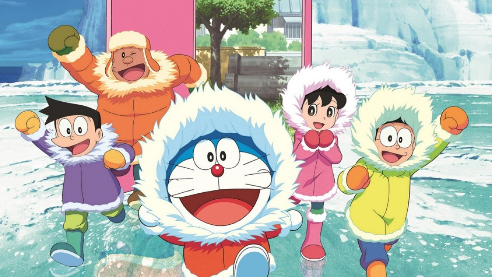

Doraemon

ตัวการ์ตูนในโดราเอม่อน ได้แก่
Doraemon
Nobita
Shizuka
Takeshi
Suneo
โดราเอมอน หรือ โดเรมอน (ประเทศญี่ปุ่น)
เป็นตัวละครจากการ์ตูนเรื่องโดราเอมอน เป็นหุ่นยนต์แมวจากโลกอนาคต ในยุคคริสต์ศตวรรษที่ 22เกิดวันที่ 3 กันยายน พ.ศ. 2655 (ค.ศ. 2112) ลักษณะตัวอ้วนกลมสีฟ้า (เมื่อแรกเกิดมามีสีเหลือง) ไม่มีใบหู เนื่องจากถูกหนูแทะ มีหน้าที่เป็นหุ่นยนต์พี่เลี้ยงซึ่งคนที่ซื้อโดราเอมอนมาคือเซวาชิเหลนชาย ของโนบิตะ วันหนึ่งเซวาชิเกิดอยากรู้สาเหตุที่ฐานะทางบ้านยากจน จึงได้กลับไปในอดีตด้วยไทม์แมชชีน จึงได้รู้ว่าโนบิตะ (ผู้เป็นปู่ทวด) เป็นตัวต้นเหตุ เซวาชิจึงได้ตัดสินใจให้โดราเอมอนย้อนเวลาไปคอยช่วยเหลือดูแลเวลาโนบิตะโดน แกล้งโดยใช้ของวิเศษที่หยิบจากกระเป๋าสี่มิติ